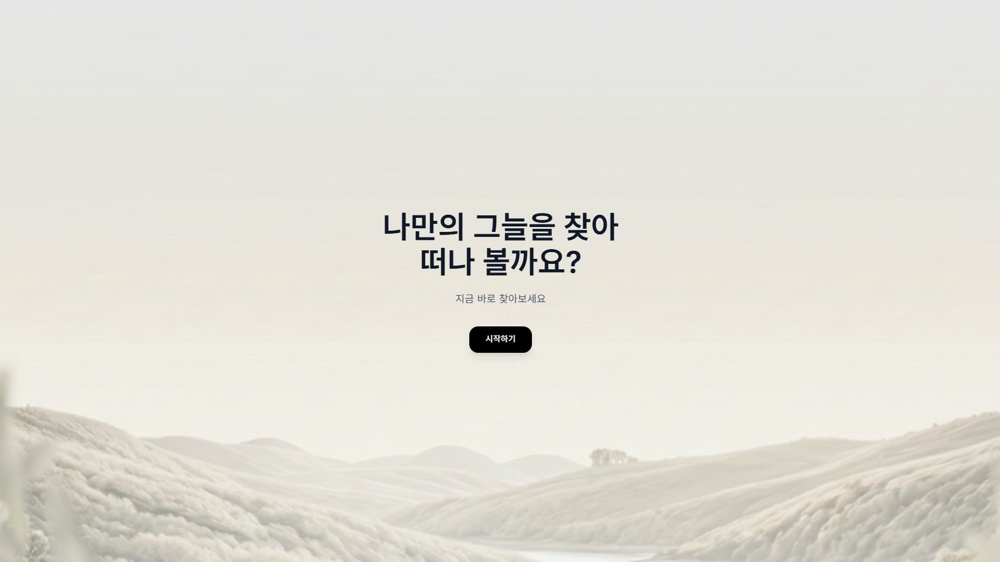
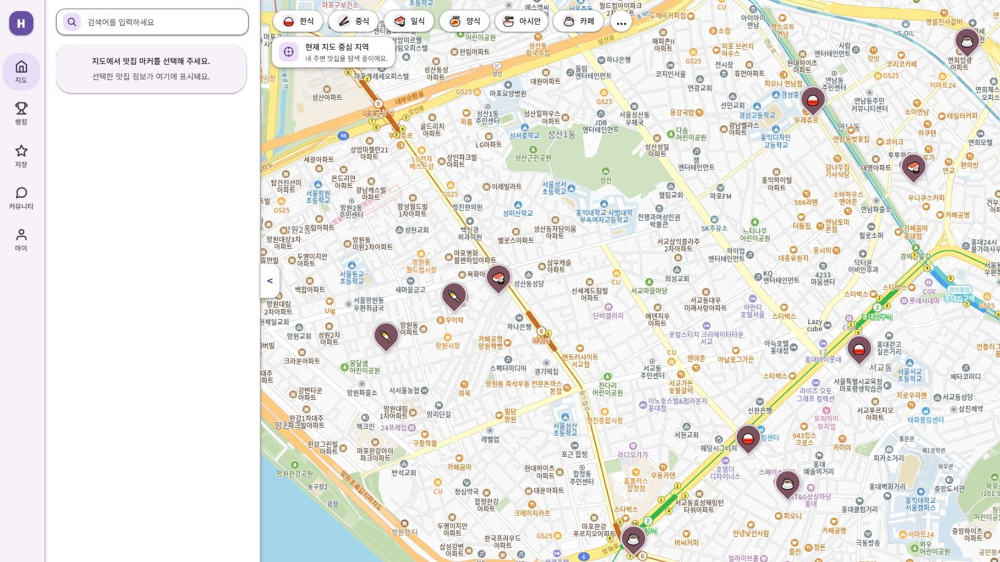
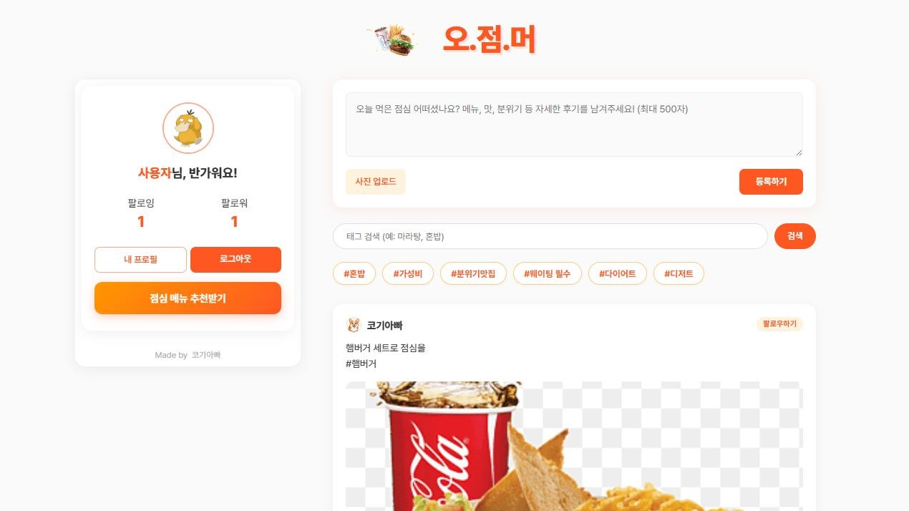

Backend
 Java&JSP
Java&JSP SpringBoot
SpringBoot Node.js
Node.js

서성오 SEO SEONG OH
Full Stack Developer
사용자와 운영자의 흐름을 함께 보는 개발자
12년 7개월 동안 유통영업, 생산관리, 고객관리, 재고관리, 인력관리 업무를 경험했습니다. 이후 Java와 Spring Boot 중심의 풀스택 개발을 학습하며, 실제 서비스가 사용자와 운영자의 흐름 속에서 어떻게 작동해야 하는지 고민해왔습니다.
기능 자체보다 그 기능이 어떤 문제를 해결하는지, 운영 과정에서 어떤 데이터와 화면이 필요한지, 사용자에게 어떤 경험으로 전달되는지를 함께 봅니다.
경력기술서 바로가기사용자가 모션 챌린지 영상을 따라 하고, 업로드한 시도 영상의 처리 결과와 점수를 확인하는 플랫폼입니다.


지역 기반 맛집 탐색, 지도 마커, 랭킹, 찜 기능을 모바일 UX 중심으로 구성한 프로젝트입니다.

점심 메뉴 추천이라는 일상 문제를 게시글, 이미지 업로드, 팔로우, 해시태그 검색과 연결한 미니 SNS입니다.
사용자와 운영자의 흐름을 함께 고민하는 개발자로 성장하고 있습니다.